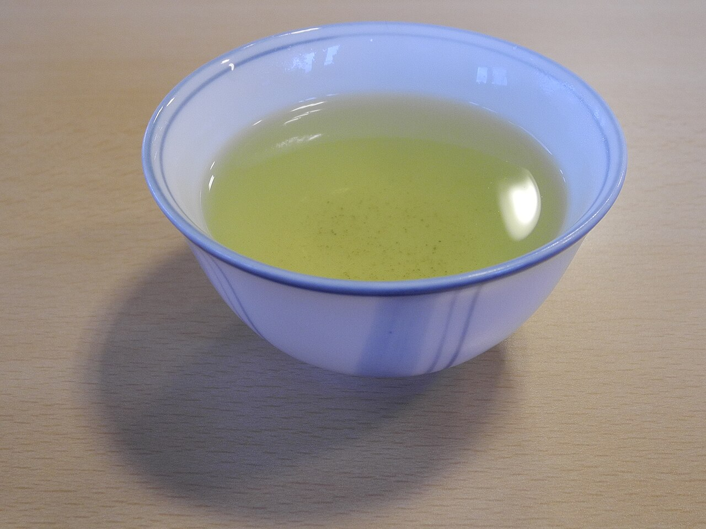
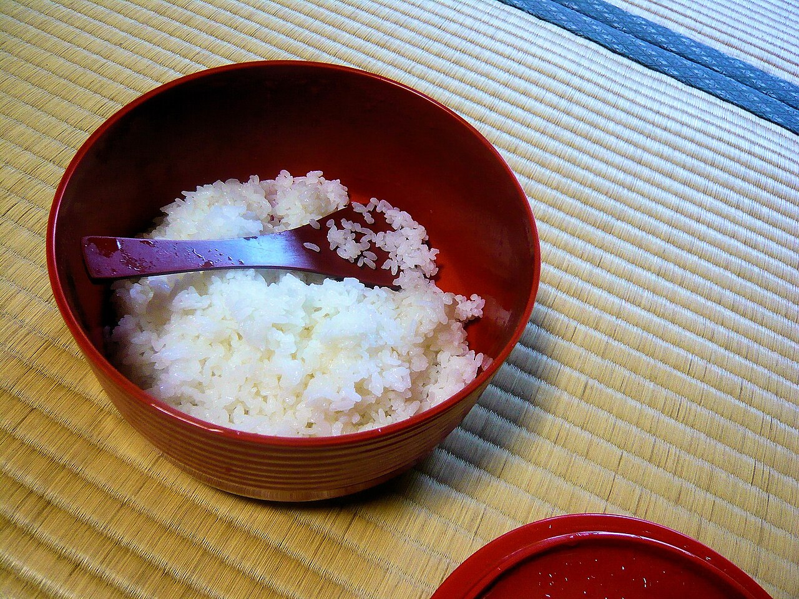

通りがかりにふらっと寄れそうな、肩の力が抜ける雰囲気。ゆっくりごはんを味わえそうだと感じました。
お客さまの声(イメージ)
口コミ
ここに並ぶ3つの声は、制作側が作成したイメージ例です。実際のお客さまの声ではありません。
お店の方の、やわらかな応対が印象に残りました。また近くに来たら、立ち寄りたいと思います。
あたたかいごはんを前に、気持ちが落ち着きました。ちょっとした息抜きの時間になりそうです。



掲載写真はフリー素材のイメージで、店舗の実際の様子・料理ではありません。他の地域で撮影されたもの、撮影地が不明なものを含みます。